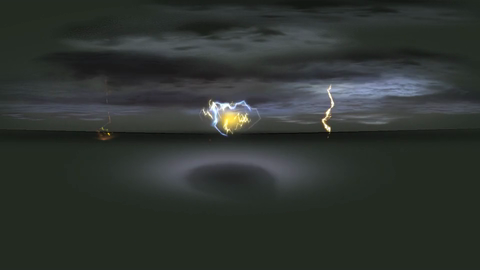
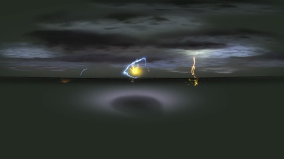
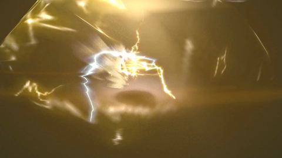
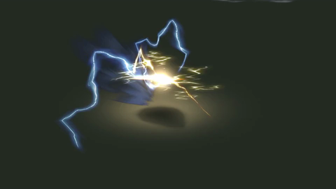

057 · 原始帧 026—050
026 · Δ 1.4027 · Δ 3.0028 · Δ 2.5
029 · Δ 2.4030 · Δ 2.2
031 · Δ 2.1032 · Δ 1.7033 · Δ 2.1034 · Δ 8.9035 · Δ 49.6036 · Δ 94.2037 · Δ 59.1038 · Δ 27.6
039 · Δ 41.2040 · Δ 43.3
041 · Δ 16.5042 · Δ 5.7043 · Δ 6.3044 · Δ 5.8045 · Δ 6.3046 · Δ 5.9047 · Δ 3.1048 · Δ 1.5049 · Δ 1.2050 · Δ 2.0